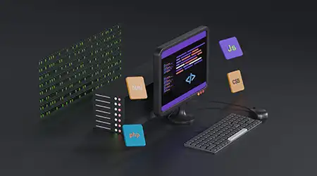
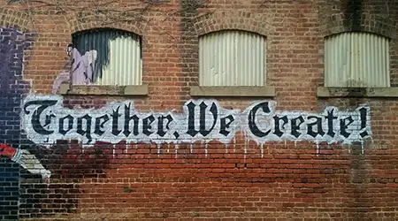
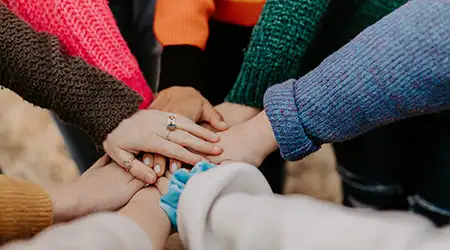

Hello,
I'm Seth Elliott
I'm a Front-End Developer and UI/UX Designer based in Salt Lake City, Utah. I have a passion for creating beautiful, intuitive, and highly functional websites and applications.
Education
I hold a Bachelor's degree in Computer Science, specializing in web development, from the University of North Carolina at Chapel Hill.
Services
Here are the services that I can offer you or your company.
Git Version Control
Git is a free and open source distributed version control system designed to handle everything from small to very large projects with speed and efficiency.
LEARN MOREApp Design
App design combines the user interface (UI) and user experience (UX). While UI design is concerned with the look and feel of the app, UX design is concerned with how the app feels and functions.
LEARN MOREWeb Development
Web development is the work involved in developing a Web site for the Internet or an intranet. Web development can range from developing a simple single static page of plain text to complex web-based internet applications, electronic businesses, and social network services.
LEARN MOREMy Work
Take a closer look at some of my top projects and portfolio pieces.
Project One
Project One is a project that I did for a client. Worked on redesiging there brand and website through design principles. It was a fun project to work on and I learned a lot.
LEARN MOREProject Two
Project Two is a project that I did for myself. It was a fun web based app I built from scratch, I learned a lot of reall neat full-stack tricks and processes.
LEARN MOREProject Three
Project Three is a project that I did for the compant I work for. Coming up with new creative back-end and front-end soultions to make our companies programs run more effiencetly and effectively. It was a great opportunity to be apart of a team setting.
LEARN MORESkills
Skills that I have learned and developed over the years.
Communication
Communication is key. I have learned that communication is key when working with clients. I have learned how to communicate with clients and how to make them happy.
Creativeness
Creativeness is a skill that I have developed over the years. I have learned how to be creative in my designs and how to make them stand out from the rest.
Teamwork
Teamwork is key. I have learned that teamwork is key when working with clients. I have learned how to work with clients and how to make them happy.
Testimonials
Take a look at some testimonals from past/current clients, read their experiences on working with me.
Matthew Taylor
I work for Inter-Connection Soulitons I hired Seth to clean up my code and API Data so that things could run more effective and smoothly, and that would be more clear. Seth came in for a few weeks and got the job done quite nicely. He always asked questions and stayed in contact and gave reports daily and weekly to show what he had been working on.
Steve Milroe
I started up a small business selling my handmade baseball bats. I hired Seth to look start up my web based app and get it spread across all social media platforms. He did a wonderful job. Made my dreams come true, i console with him often to see what directions i need to take now that my business is ramping up.
Rhonda Lloyd
I hired Seth to for front-end library purposes, to take what someone built and make it shine. Working with him was easy and painless, he was great at communciationg and listening to my ideas for what i wanted. I would hire hiim again.
Contact
Let's Connect and Create Something Amazing Together!